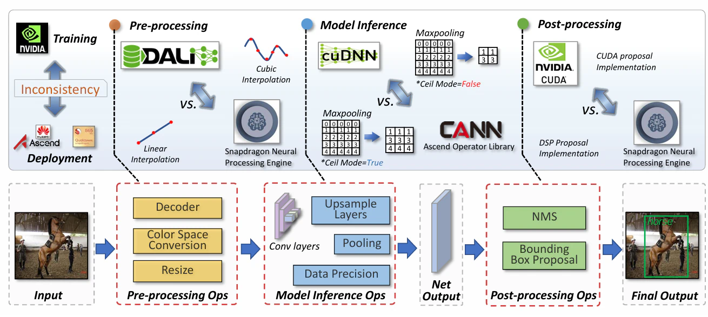

![[MLSys'23] 训练与推理之间的“噪声”](/2024/06/13/sys-noise-mlsys23/1718294604351.webp)
[MLSys'23] 训练与推理之间的“噪声”
[MLSys’23] 训练与推理之间的“噪声”
全文结构简单，实验充分（涵盖 CV 和部分 NLP），讲述了训练和推理之间可能导致精度下降的一些 gap ，某种程度上也解释了“为什么同样的方法，人家的效果好”；反过来也可以作为设计模型输入输出的一些 trick。此外，学习过程中也可以了解一点图像、模型训练和量化的基础知识。是很好的文章。
全文的重点在于解决了如下问题：
从训练到推理，有哪些不确定性会导致精度下降？
这些不确定性会导致怎样的后果？
如何解决这些不确定性？
另外，文章提出了一个 benchmark 框架（此处略）。
训练和推理之间，有哪些 GAP？

由图片所示，一个训练好的模型在推理的时候还会遭到各种噪声。不过考虑到它们其实是推理过程中的不一致性，叫“噪声”似乎不大准确。遗憾的是，从预处理到后处理，这种不一致十分充分冗杂，下面按照时间轴来。
预处理
对于推理一张图像的过程来说，可能引入的操作有：解码（如Jpeg），色域转换和缩放。这三个过程都能带来不一致性：
解码：对于一张jpeg图像来说，它是如何被编码的？不管是怎样的有损压缩，为了减小体积都要丢弃一些高频信息。分辨高低频的方式就是离散余弦变换：对于每个8x8的小块，通过变换把图像分为低频成分和高频成分，解码的时候再通过高频低频成分做逆变换推出像素值。总之需要进行一些计算操作，但是显然浮点的操作比较费时费力且冗余较大，于是就有快速DCT变换（查表法）来加速。但是①不同的库里，查找表有些微不一致；②各类矩阵运算里可能有不同的上下取整带来的不同。
色域转换：神经网络里面的输入一般都是RGB格式，但是图像里面一般是YUV格式——Y是亮度，UV是色度。这之间的浮点转换显而易见的在不同库里可能有精度的区别；并且为了减小体积，人们经常会利用人眼对亮度更敏感的原理，把色度用更小的分辨率存起来，又造成了一点差异。
缩放：缩放的算法很多，如最邻近、双线性、三次、Lanczos等等。这些算法都会在保留细节和减少伪影做一些权衡。显然现在的算法也不大够好，要不然也不用AI放大了。不同的库会默认选择不同的算法，输入由此也变得不一样了。一图胜千言（3x）：
推理
推理里面最直接的一点：量化！FP32, TF32, FP16, INT8，为了加速，各种各样的数据格式千奇百怪，如果直接做了量化，产生的值必然是不同的；并且如果原先用fp32计算出来的值很大或者很小，用fp16再计算，推理的时候必然会产生上下溢。
上采样的方式也会产生明显的影响，这一点和预处理的缩放一样，肉眼就很明显了，对于神经网络来说也做难怪会有影响。这一点对于图像分割的任务比较重要。
此外还有池化的上下修（我暂且先这么叫着）：如果池化核没法整除一个特征图（比如33x33的特征图，2x2的核），那么池化后的特征图大小也有待商榷，有的库会倾向于上修（17x17），有的则相反（16x16），这多出来或者少进去的一行一列也是对结果有影响的。
后处理
把输出变成实际结果也要一点处理，比如非极大值抑制（NMS）里面各种框如何排序；Softmax里面如何舍入舍出等等。总之七七八八的还是那些问题。
GAP 的总结
虽然说算法是具有确定性的，但是根据库的不同总会做一点不同。在此试图做一点另外一个角度的归纳。这些不同的原因大概有如下3点：
精度：不管是预处理还是推理还是后处理，都会涉及到浮点操作，于是受到精度的影响。但是精度是不一定的。
舍入：尺寸也好，输出值也好，如果要被量化（降低精度的时候），到底是向上取值还是向下取值，这是不一定的。
算法真的不一样。像插值或者图像解码中会遇到这种问题，这就真没什么好说的了。
原文做了一点可视化，可视化的结果就很明显：

影响多大？
直接上实验：原文探究了解码、缩放、色域、精度、上下修以及各种操作都不同的影响。上表：
作者在图像分类、检测、分割以及NLP上面对能做的变化做了些实验。能够得到的几个结论：
推理精度的影响相对而言不大。图像分类里面fp16带来的下降基本都在0.1%以内，后面作者基本都不做了。int8带来的影响也不到1%，NLP也是。
模型越大越鲁棒。大体而言，模型越大，delta占比就越低。
原作对于NLP任务做的不多，CV任务还有几个结论：
- 实锤了“CNN模型关注细节，Transformer关注全局”。分类任务中，从CNN的角度来说，图像解码和缩放带来的细节区别远大于色域转换带来的全局差异。Transformer正好相反。
- 池化操作、特征图上采样、后处理很容易带来几个点的差异，使得更好的模型设计功亏一篑。
- 目标检测和分割任务对于图像预处理没那么敏感。
怎么办？
现有方法
一般来说，大家都会用加噪声、Augmix之类的方法进行数据增广；在对抗学习那里还会有一些对抗训练的方法。
然而比较遗憾的是各种增广都基于一个库的话神经网络是提前感知不到的。实验来看也是并没有甚么O用。直接上图：
作者提出的方法
由于输入的影响很多时候是最大的，并且可以很容易复现（不同的库带来的不同实现方法，实际上import一下就改了），所以就把各种输入方法都喂进网络里就好。训练的时候只要随机挑一个库打开图片，随机用某一个库挑一种算法进行缩放，轻松地就能让网络学习到这些“噪声”。
很naive的idea，很简单粗暴，但是好用。
总结
内容其实很简单，也不像是CV论文那样使用了各种fancy的方法，大体上都是以实验为主；最后提出的方法也很粗暴。但是整个文章实际上回答了一个很基础的问题：“为什么他点那么高，我死活就刷不出来？”
笔者在复现SR模型的时候发现过这个十分严重的问题，只要把退化时下采样方式从bicubic改成nearest，小模型上的PSNR可以轻松掉个2~3左右，提升这么大的值已经足够发一篇了。
另一个重要的点在于，在各种“精妙的设计”之下，还有很多基础的问题没有解决。正可谓 “Garbage in, garbage out”，这种严格要求数据的工程方法有时反倒能成为解决学术问题的关键。